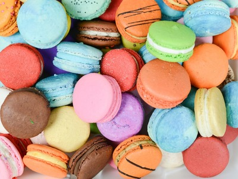

Gallery

×

At SUNSHINE Bakery, we apply time-tested balanced methods that offer unique flavors and textures. Our range of hand-crafted cookies includes varieties from all over the world and is designed according to high-quality industry standards. We use our natural sourdough in each type of our cookies. We never take shortcuts for our processes since that is how we achieve that irresistible freshness and taste.
The idea of creating SUNSHINE came about when we lived and worked as bakers in Chicago, Illinois. Our story starts with us, with how we met, what we did and learned, and now you are a part of it.
Our very first meeting at our BA in Culinary Arts in 2011 marked the beginning of our journey. We were sitting next to each other at the open baking workshop and have not left each other ever since. SUNSHINE is the apex of eight years of work as cooks who have now become bakers – collecting innovative and creative ideas, sharing skills, food recipes, and our true passion to feed people with the food made with love and care.
While in Chicago, we acquired priceless skills and practice by working closely with the best bakers in the industry.
We moved to London, UK and opened SUNSHINE Bakery. Our small bakery began its journey on a small farm. Since then, we have moved to a more spacious place that we believed will bring us closer to our mutual dream of creating a local bakery.
Now, we make every effort to find natural ingredients anywhere we can, ranging from growing organic products in the countryside to collecting products from our small organic backyard at home and establishing partnerships with local producers.
Seasonal food is an important principle in creating our new menus. In summer, for instance, you will find more local berries and rhubarb in our meals. As we approach autumn, there will be more stoned fruits and blackberries. Then we will offer pears, apples, and quinces to prepare for the winter.
At SUNSHINE, we specialize primarily on baking cookies and flaky pastries. We bake fresh produce each day. All our products are made by hand using a sourdough, which ensures a slow fermentation process. We mix the sourdough starter on day one, mix and shape it the next day, then bake to turn these simple ingredients on the third day. This approach to baking requires the highest level of commitment. We always strive for exceptional baking, delicacy, and client satisfaction.
Although it is worth waiting, nothing can be compared with the flavor, that tempting crust and custard of our sourdough, or the smell of fresh-baked butter croissants stuffing the bakery.
We are looking forward to baking our cookies for you!
Anna & Volodya